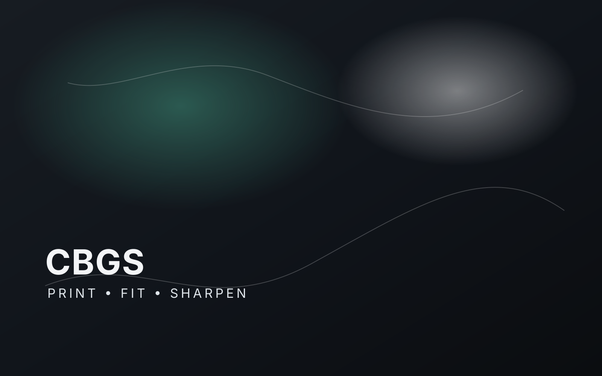

CBGS — Blade Geometry Shaper
A simple, 3D-printable sharpener that upgrades how blades are sharpened.
CBGS (Cutdesign Blade Geometry Shaper) rethinks the sharpening jig itself — printable in-house, and built to improve both the approach to sharpening and the result on the blade.
Concept
Rethinking the sharpening jig
- Simple, 3D-printable design
- Upgrades the sharpening approach itself
- Built for consistent, repeatable results
Progress
Past the prototype stage
- Multiple working prototypes built
- Refined through several design iterations
- Validated as a physical, working design
Now Building
Custom-fit software
- Software that generates a 3D file per blade
- Matches the jig precisely to the customer's knife
- Aims to make custom fitting fully automated